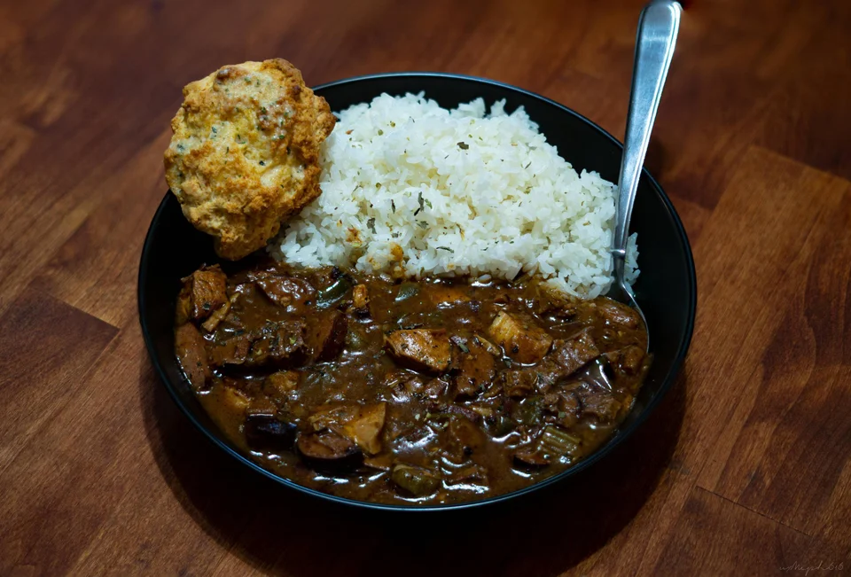

Gumbo with Smoked Brisket

Ingredients:
- 1 lb boneless and skinless chicken thighs (breasts substitutable)
- 1 lb sausage
- 1 lb brisket
- 1-2 diced celery stalks
- 1 fine diced jalapeno (seedless for no heat)
- 1 whole bulb of garlic. Not just clove
- 1 diced onion (yellow or white)
- 6 sliced Okra
- 1/2 cup high temp oil
- 1/2 cup all-purpose flour
- 4-6 cups chicken stock
- 1 beer
- 2-4 bay leaves
- Tony Chachere's Seasoning
Steps:
- Mise en Place. Prepare all ingredients before beginning to cook
- Season chicken and cook until browned on both sides
- In a large pot, prepare a roux using the oil and flour. Get the oil smoking hot on at least medium-high heat, then add flour. Stir until roux is brown
- Once roux is ready, add in all the prepared vegetables except for the garlic. Mix and stir the vegetables for about 5 minutes, or until the onion is transluscent. Add garlic in last and stir for around 30 seconds
- Turn heat to low-medium and pour in the beer. Add in 1 cup of chciken stock if it becomes too thick. Stir the mixture and scrape fond off the sides and bottom of pot. Cook for about 5 minutes so alcohol can burn out, then pour in 3 cups of stock (or as much for your perfect consistency)
- Set heat to low. Chop up the meat and stir into pot. Add spices and bay leaves. Let simmer until dark in color